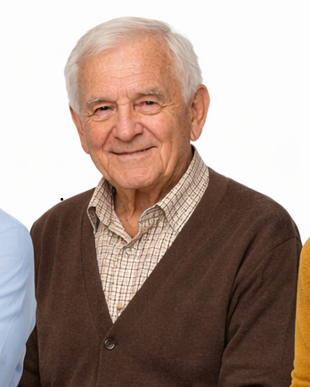

Toto je školní web školy paličkování. Všechny informace jsou určeny pro vzdělávací účely.
Naši Lektoři
Anna Nováková
Kontakt: anna@ukrajky.cz
Zaměření: Základy paličkování a tradiční vzory.
Více informací

Zázemí Školy
Naše učebna je vybavena moderním nábytkem a dostatkem materiálů pro všechny studenty. Máme k dispozici různé typy paliček, podvinků a nití. Pro pokročilé studenty nabízíme možnost používat vlastní vybavení.
Škola se nachází v klidné části města s dobrou dopravní dostupností. Parkování je možné přímo u budovy.